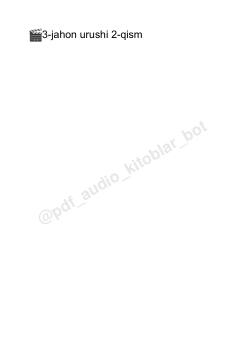

3JUrush soyasida yashayotgan oilaning qiyinchiliklar va umidga to'la hayoti haqida hikoya.
Urush davridagi qiyinchiliklar va oilaviy qadriyatlar haqida hikoya qiluvchi asar. Mahmud va uning oilasi front yaqinidagi qishloqda qishga tayyorgarlik ko'rish va yaqinlarining qaytishini kutish bilan kun kechiradilar.